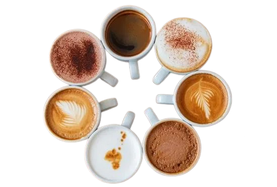

About Coffee Haven
We started with a simple idea: coffee can be a gentle ritual that improves the day.
Our Beans
We partner with small growers and source beans that are traceable and responsibly farmed. Roasted in small batches to highlight unique flavor notes.
Community
Local artists, remote workers and friends — our space aims to be welcoming for everyone.

Meet the Founder
Started in 2021 by a small team of coffee lovers, Coffee Haven grew from pop-ups to this cozy spot. Our mission remains the same — slow coffee, good conversations.